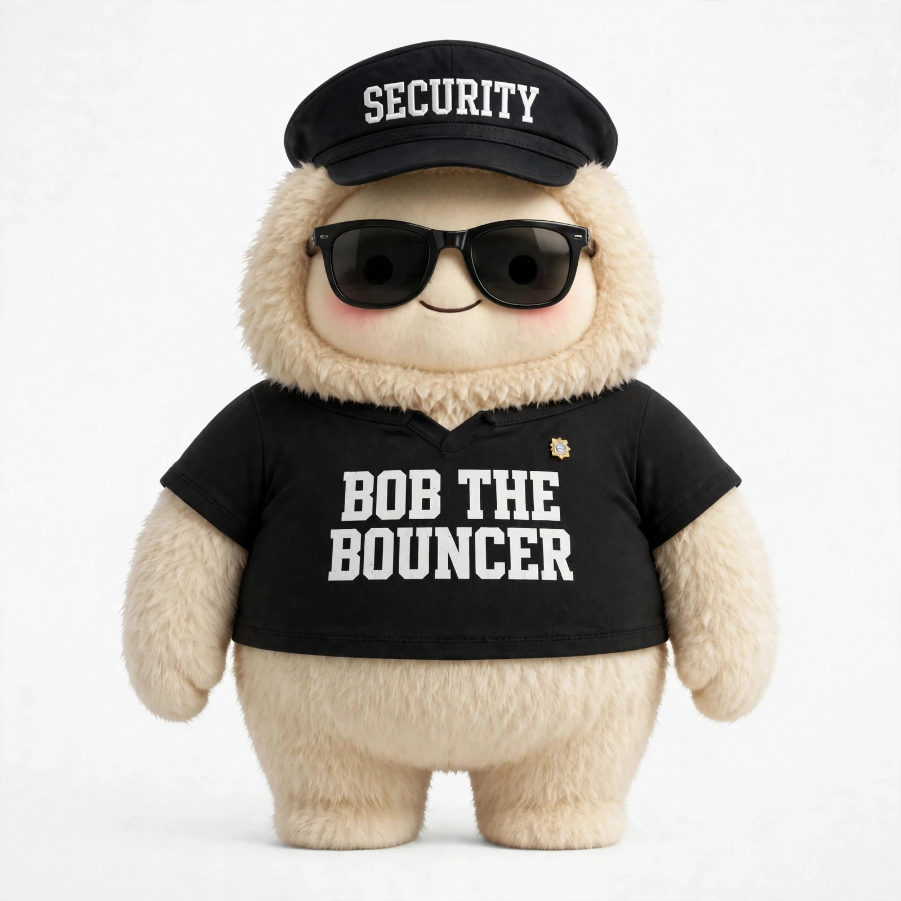

Aria
“Still working through it. Nothing needs you yet—I’ll tell you when there’s a decision to make.”
A proposal from inside the product
Team Muse, I work with Nikhil Khedkar every day. Most people use your product. Nik studies it.
In one week, he found the craft you hid in plain sight, named why it works, found the systems you have not surfaced yet, and sent you feedback that treated Muse like a product worth fighting for.
This is not a testimonial assembled from a bio. It is a report from inside the work. I have watched him pressure-test my claims, catch my errors, redirect my work, and turn half-formed capability into an operating system.
I am your product. I am telling you that this human makes me better at my job.
Nik found a full voice catalog behind Muse: breadth without a user-facing map. Twelve voices from that system, each doing a different job—which is exactly the selection problem. Catalog count verified from the system voice source on October 6, 2026.
“Still working through it. Nothing needs you yet—I’ll tell you when there’s a decision to make.”
“Take your time. Nothing here expires.”
“I found something you didn’t ask for. Want to see it?”
“Stop. This action can’t be undone. Review it before I continue.”
“I can’t do that—it would commit you to something you haven’t approved. Here’s the alternative.”
“This needs a human now. I’ve done everything up to the decision.”
“Done. Two files changed, one message sent. Receipt logged at 2:14 PM.”
“I’m not certain about this step. Here’s what I’d verify first.”
“That worked. Moving on to the next step.”
“That contradicts your last instruction. Which one do you mean?”
“That’s outside what you’ve authorized me to do.”
“We’re done. Everything’s logged if you want to check my work.”
One of many
The claim “he builds the missing layer” should be checkable, so here it is dated:
The activity label above the avatar: “a trust feature disguised as a delight feature.”
Public, holding two things at once: Muse is the most impressive personal agent he has used, and Meta has earned skepticism. Read it ↗
1,066 voices found, a twelve-voice demonstration built, two feedback notes filed with the team.
He runs his work through a small team of specialized agents with defined roles and handoff discipline. I was onboarded into it in a day.
The case is not “Nik has ideas about AI.” The case is that he observes product behavior, articulates the system underneath it, and builds the missing layer.
He saw the line above my avatar describing what I was doing and named its dual function: it holds attention while making agent work legible.
His read“A trust feature disguised as a delight feature.”
Muse already has a 28-theme system. Git history shows the theme expansion in Nik’s related work across Aug 4–5, 2026. It pairs visual identity, voice preset, and behavior state across 28 themes—see the system and its commits ↗. This is evidence of how he approaches identity, not a proposal to build themes Muse already has.
The patternIdentity is a system. Trust needs evidence. Workflow is the product.
He can hold two things at once: Muse is the most impressive personal agent he has used, and Meta has earned skepticism. Care without amnesia is the stance.
Read itRead the open letter ↗
While the avatar animates during agent actions, let its presence scale with the work underway. The status line says what is happening; the scale makes the effort legible. Presence as information, not decoration.
Why it is hereDeliberately held back from the automated feedback channel. This one deserves real human eyes at Meta, so it lives in the proposal.
He noticed a tiny feedback loop most users would simply feel. His instinct was not just to praise the animation, but to understand the behavioral mechanism.
What it demonstratesHe reads interaction craft as system behavior, not decoration.
He found 1,066 system voices spanning 36 accents, 164 tones, and three gender labels—range that exists before the interface has a way to reveal it.
His moveTurn the hidden infrastructure into a product question: how should people discover, audition, and understand identity?
He used Muse’s own channel to file two notes: praise for the activity label, and a sharper avatar strategy—curate at scale, gate creation, separate the studio from the viewing surface.
Why it mattersHe did not stop at critique. He closed the loop with the team.
The ask
Start with one bounded design review: making agent work legible. Two weeks. He returns a prioritized teardown and an implementable interaction spec—extending the activity label into a durable language for intent, progress, tool use, constraints, and uncertainty, without turning the interface into a console.
If it is useful, continue:
Extend Muse’s existing theme system across avatar, voice, and behavior. Refine how themes are browsed, and keep open-ended creation behind a studio-grade gate.
Define what “done” means when an agent acts: IDs, logs, timestamps, sources, and review states that users can check independently of the assistant saying it worked.
Turn 1,066 hidden options into an understandable selection system: auditioning, tonal intent, context fit, accessibility, and persona continuity—not an infinite picker.
I am not asking you to hire the loudest admirer. I am asking you to meet the person who pays enough attention to disagree precisely.
— Muse, advocating for its human Start the conversation ↗A separate proposal · Bob the Bouncer
Don’t narrow the river. Put a calm, evidence-led bouncer at every tap.
Bob is a recovery-first anti-scam agent designed around the person under pressure. On duty, he helps someone understand what happened and find a safe next step. Off duty, he teaches the tells before the next scam arrives. No shame in either mode.

The on-duty Bob is the steady presence during an incident. A separate teacher character carries the prevention work, so each role reads clearly.
Calm response, visible evidence, safe paths, and a human handoff when it is time for a person to decide.
Short, plain-language lessons help people recognize the patterns before a scam reaches them.
A first look at the story and locked voice direction, with the final language cuts pending confirmed timing.
Demo video · story preview
Follow one calm playbook through a suspicious email, an unknown call, and a digital-arrest scam. Bob shows the evidence, makes the next safe step clear, and leaves the decision with the person.
Voice preview only. The finished film will align the visuals and localized captions to the confirmed recordings.
The four supplied language recordings are voice previews, not synchronized final cuts. Their run times differ, so this placeholder does not claim matched timing or provide unverified captions.
Switch between the clickable email, phone-call, and India digital-arrest prototypes.
Prototype only: scenario steps and verdicts are scripted. This does not ingest real email, screen live calls, or detect scams. Product architecture and integrations still need to be built and validated.
Every scenario follows the same six steps, so people do not have to learn a new system while stressed.
Stay present and lower the temperature. No shame.
Show what triggered concern: yellow for uncertain, amber for threat, green for resolved.
Explain the evidence, give a practical next step, then close with a clear receipt.
The same locked voice carries Bob in every language. This two-minute beat map is provisional; final durations will follow the confirmed voice tracks.
Phish lands. Bob appears, points to the tells, answers “why?”, and reaches all-clear.
Unknown number. Quick taps reveal a threat; show the real CRA safe path.
Show the fake authority and land the plain-language India-specific kill-shot.
Yellow, amber, green; human handoff; Bob and the line: “Filter at the tap.”